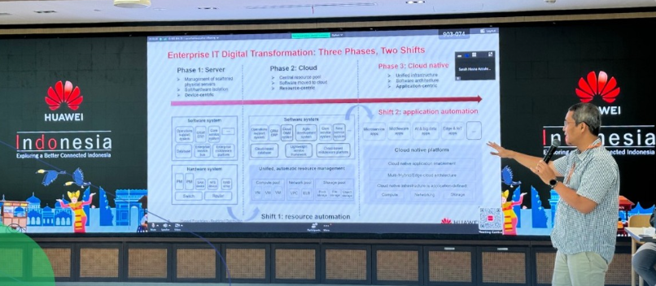
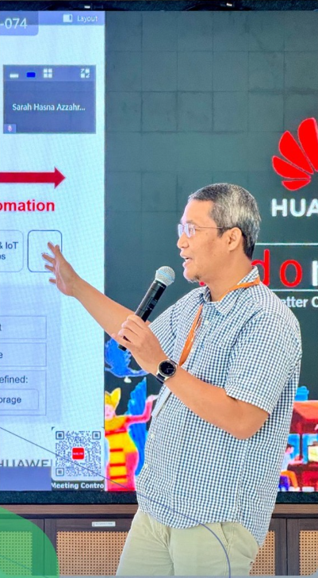
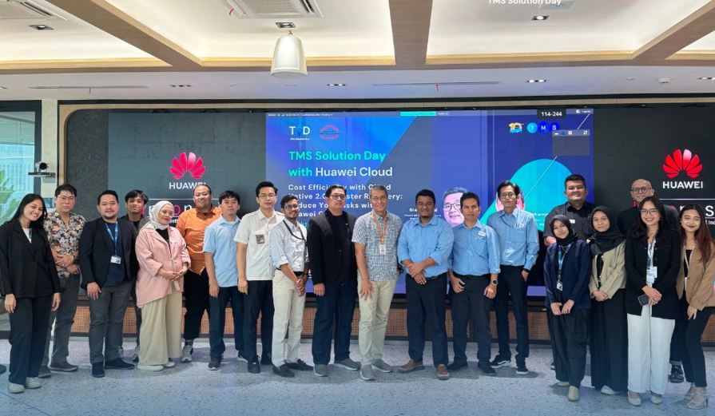
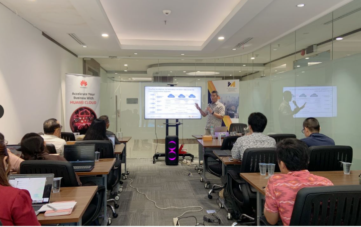
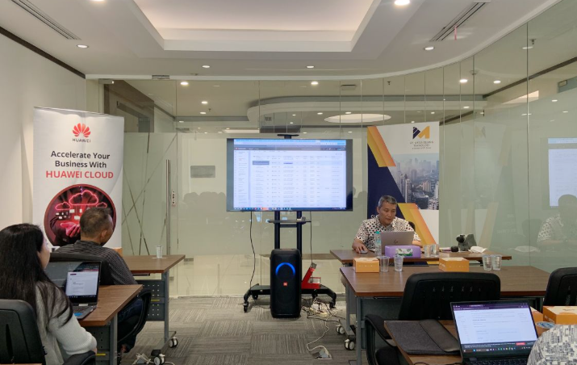
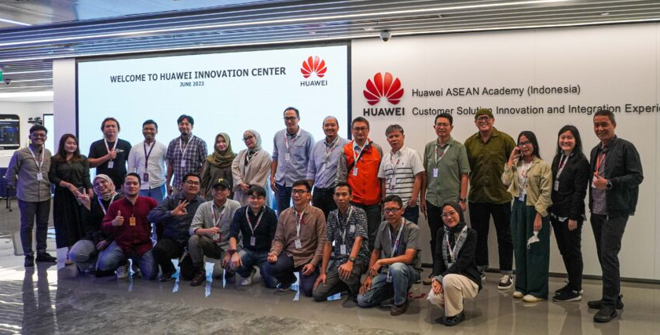
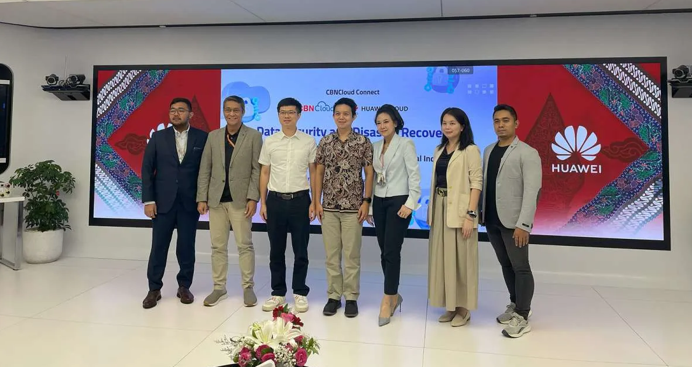

05.3 Training Program Delivered
Cloud enablement sessions delivered with Huawei Cloud partners — data security, cost efficiency, and IaaS/ECS scalability.
Data Security & Disaster Recovery for Financial Industries
Topics Covered: Strategi keamanan data dan kesiapsiagaan bencana untuk industri keuangan; solusi backup & disaster recovery Huawei Cloud (redundansi Multi-AZ, replikasi lintas wilayah, cadangan inkremental hingga 95% lebih cepat, Instant Restore).
Audience Size: 50 peserta — pemimpin dan pengambil keputusan IT sektor keuangan Indonesia.
Feedback / Impact: Memperkuat pemahaman peserta atas risiko kebocoran data dan pentingnya strategi DR yang teruji, sejalan dengan kolaborasi sektor publik-swasta dalam membangun ekosistem keamanan data nasional.
Cost Efficiency with Cloud Native 2.0 & Disaster Recovery
Topics Covered: Optimalisasi biaya infrastruktur melalui Cloud Native 2.0, manajemen disaster recovery yang efektif, dan pengurangan risiko operasional — relevan untuk sektor dengan beban traffic musiman dan sistem legacy seperti retail dan pemerintahan.
Audience Size: berkisar 30 peserta - pemimpin dan pengambil keputusan IT.
Feedback / Impact: Sesi tanya-jawab aktif seputar efisiensi biaya dan kesiapan infrastruktur menghadapi lonjakan traffic tanpa downtime.
Expanding Cloud Capabilities with Huawei IaaS, ECS, and Auto-Scaling
Topics Covered: Solusi IaaS, ECS, dan Cloud Storage Huawei Cloud, dengan auto-scaling untuk menangani beban compute fluktuatif — dilengkapi demo produk langsung, relevan untuk sektor dengan kebutuhan skalabilitas tinggi seperti public sector dan gaming.
Audience Size: sekitar 20 peserta - umum, staf IT dan management IT menengah.
Feedback / Impact: Demo produk membantu peserta memvisualisasikan penerapan ECS dan auto-scaling secara langsung pada skenario beban kerja tinggi.
Gallery






